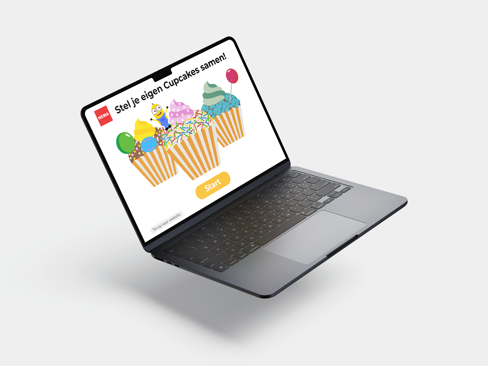

Homescreen
Op het homescreen zie je een aantal voorbeeldcupcakes ter inspiratie. Onderaan de pagina staat één duidelijke en opvallende start-knop, je weet meteen wat de bedoeling is: aan de slag gaan met het maken van je eigen cupcakecreatie!
Op deze actiesite stel je eenvoudig je eigen verjaardagscupcakes samen. Kies smaken, toppings en decoraties en laat ze bezorgen of ophalen bij een HEMA-filiaal. Binnen drie dagen geniet je van feestelijke cupcakes in speciale uitdeeldozen – perfect voor verjaardagen en traktaties!
Op het homescreen zie je een aantal voorbeeldcupcakes ter inspiratie. Onderaan de pagina staat één duidelijke en opvallende start-knop, je weet meteen wat de bedoeling is: aan de slag gaan met het maken van je eigen cupcakecreatie!
Op de samenstelpagina's kies je eerst voor het aantal cupcakes dat je wilt maken en doos, vervolgens kies je een basis: vanille, chocolade of red velvet. Daarna voeg je toppings, kleuren en decoraties toe die direct zichtbaar worden op de cupcake. Dankzij de speelse animaties en duidelijke uitleg is het proces makkelijk en leuk, voor jong en oud!
Na het samenstellen start het bestelproces: selecteer bezorgen of ophalen, en vul je gegevens in. Dankzij heldere knoppen en visuele ondersteuning is bestellen snel en foutloos, ideaal voor iedereen die gemak zoekt!

De eerste ontwerpen zijn gestart met schetsen op papier, een snelle en creatieve manier om ideeën vorm te geven zonder beperkingen van digitale tools.
In deze fase kon ik verschillende gebruikersflows en visuele elementen verkennen, zoals het kiezen van een cupcakebasis, toppings en badges.
Zodra de opzet duidelijk was en voldeed aan de eisen, heb ik de schetsen vertaald naar een Hi-Fi prototype.
Hiervoor gebruikte ik Illustrator voor het visuele design en Figma voor het interactieontwerp. Zo ontstond een heldere en gebruiksvriendelijke basis voor de uiteindelijke applicatie.
Een kleurrijke actiesite waarmee je stap voor stap je eigen verjaardagscupcakes samenstelt. De gebruiker kiest smaken,
toppings en decoraties en ziet het resultaat direct terug in een visueel voorbeeld.
De interface is ontworpen met gebruiksgemak en feestelijkheid in gedachten: snel, duidelijk en in een herkenbare HEMA-stijl.
Het proces is intuïtief opgezet: van het selecteren van het cupcakeformaat en de basis, tot het toevoegen van toppings en een persoonlijke badge.
Elke stap geeft direct visuele feedback, waardoor de gebruiker precies weet hoe de cupcake eruit komt te zien.
Bestellen kan eenvoudig voor bezorging of afhalen bij een filiaal – perfect voor kinderfeestjes of traktaties op school!
Naast deze vier voorbeeldschermen zijn er in totaal nog veel meer schermen ontwikkeld, inclusief verschillende iteraties per stap.
Deze zijn gebundeld in een overzichtelijk PDF-bestand, waarin het volledige ontwerp- en denkproces te bekijken is.